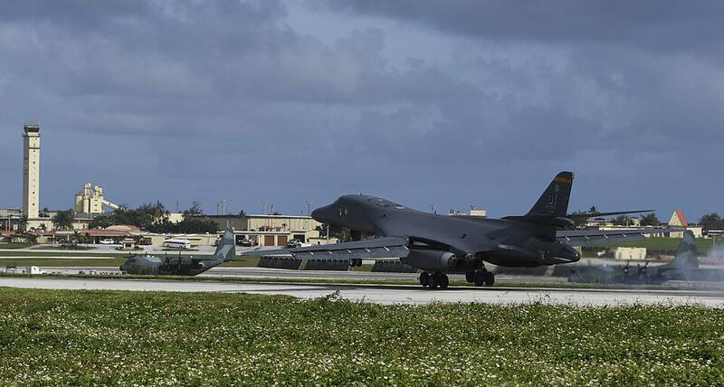

Andersen Air Force Base
Guam

A U.S. Air Force base on the Pacific island of Guam. 1
Open in the interactive Watcher
Sources
- Andersen Air Force Base Wikipedia
Guam

A U.S. Air Force base on the Pacific island of Guam. 1
Open in the interactive Watcher